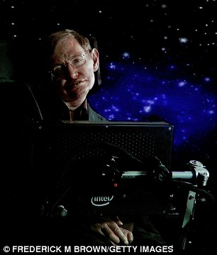
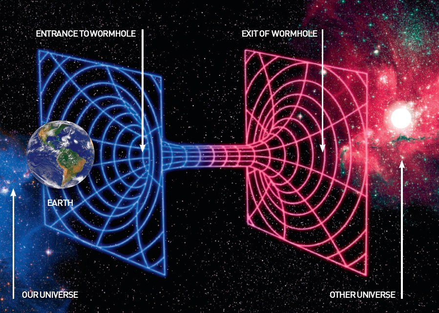
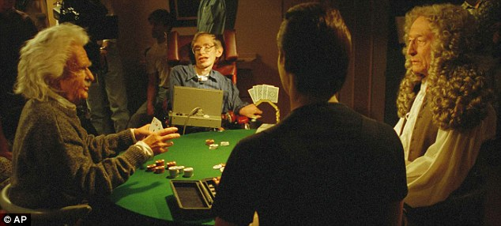
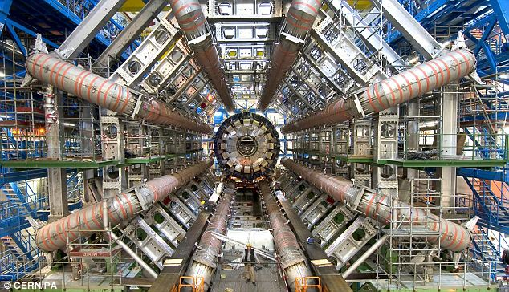

Du h�nh vượt thời gian l� một đề t�i th� vị được lấy l�m chủ đề cho nhiều bộ phim khoa học giả tưởng, b�n cạnh đ� n� cũng l�m tốn kh�ng �t chất x�m của nhiều người khao kh�t tạo ra một cỗ m�y c� khả năng đưa con người trở về qu� khứ cũng như đi đến tương lai. Vậy điều đ� c� thể thực hiện được kh�ng? C� cản trở n�o kh�ng? Tại sao đến nay người ta vẫn chưa thực hiện được? L�m thế n�o để chế tạo một cỗ m�y du h�nh vượt thời gian? Stephen Hawking, nh� Vật l� học, Vũ trụ học nổi tiếng người Anh sẽ gi�p ch�ng ta th�o gỡ c�c vướng mắc đ�.
Dưới đ�y l� những l� luận của Stephen Hawking được ph�t s�ng tr�n chương tr�nh "Stephen Hawking's Universe" tr�n k�nh Discovery Channel.
Tất cả những g� bạn cần l� một hố s�u, m�y gia tốc hạt Large Hadron Collider hoặc một t�n lửa c� thể bay với vận tốc cực kỳ nhanh.
Xin ch�o, t�n t�i l� Stephen Hawking, một nh� Vật l� học, Vũ trụ học v� cũng l� người c� t�nh hay mơ mộng. Mặc d� t�i bị giới hạn kh� nhiều trong việc tự đi lại v� phải n�i chuyện th�ng qua m�y t�nh do bệnh tật, nhưng t�m tr� t�i th� ngược lại, ch�ng ho�n to�n tự do. Tự do để kh�m ph� vũ trụ, vạn vật v� tự đặt ra những c�u hỏi lớn như: liệu du h�nh vượt thời gian c� khả thi kh�ng? Liệu ch�ng ta c� thể mở một c�nh cổng dắt v�o qu� khứ hay t�m ra một đường tắt dẫn đến tương lai kh�ng? Ch�ng ta c� thể d�ng những quy luật tự nhi�n để kiểm so�t thời gian kh�ng?
Du h�nh vượt thời gian từng bị xem l� ng�nh khoa học dị gi�o. V� t�i đ� phải tr�nh n�i về n� v� sợ rằng người ta sẽ xem m�nh l� một người kỳ quặc, nhưng ng�y nay th� kh�c. Thực tế, t�i giống như những người đ� từng x�y c�c khối đ� Stonehenge, l� người bị ảm ảnh bởi thời gian. Nếu c� một cỗ m�y vượt thời gian, t�i sẽ "gh� thăm" Marilyn Monroe v�o thời kỳ ho�ng kim của c� ấy hoặc viếng thăm Galileo khi �ng ta xoay k�nh thi�n văn của m�nh l�n bầu trời. Nhưng c� lẽ t�i lại muốn du h�nh đến điểm tận c�ng của vũ trụ để xem n� như thế n�o.
Để hiểu t�nh thực tế của du h�nh vượt thời gian, ch�ng ta cần phải "nh�n" thời gian theo c�ch m� c�c nh� Vật l� học đang nh�n - nh�n ở chiều kh�ng gian thứ 4. Đừng lo v� n� cũng đơn giản th�i. Bất kỳ ai học qua kiến thức phổ th�ng đều biết rằng mọi vật thể trong tự nhi�n, ngay cả con người, đều tồn tại dưới 3 chiều kh�ng gian, đ� l� chiều d�i, chiều rộng v� chiều cao. Nhưng thực ra c�n c� một chiều nữa, đ� l� chiều d�i thời gian. Như con người ch�ng ta c� thể sống được 80 năm, những tảng đ� Stonehenge đ� tồn tại h�ng ng�n năm, c�n hệ Mặt Trời th� sẽ tồn tại đến h�ng tỉ năm, mọi thứ đều c� ri�ng cho n� một chiều d�i về thời gian, v� kh�ng gian cũng kh�ng ngoại lệ. Du h�nh vượt thời gian nghĩa l� du h�nh qua chiều kh�ng gian thứ 4 n�y.
L�m r� hơn vấn đề n�y, h�y tưởng tượng đến việc ch�ng ta l�i xe hằng ng�y. L�i theo đường thẳng l� bạn đang l�i theo 1 chiều, quẹo tr�i hay quẹo phải l� bạn vừa c� th�m chiều kh�ng gian thứ 2, l�i l�n đồi hay xuống dốc ch�nh l� chiều kh�ng gian thứ 3. Vậy l� bạn đ� được �du h�nh� trong kh�ng gian 3 chiều. Vậy l�m thế n�o để ch�ng ta du h�nh vượt thời gian tr�n Tr�i Đất? L�m sao để t�m ra con đường của chiều kh�ng gian thứ 4?
Như bạn thường thấy trong c�c bộ phim khoa học giả tưởng về du h�nh vượt thời gian, cỗ m�y thời gian sẽ tạo ra một lối đi, một đường hầm xuy�n qua chiều kh�ng gian thứ 4 để cho con người bước qua n�. � tưởng n�y kh�ng qu� đi�n rồ, nhưng thực tế c� thể sẽ rất kh�c so với những g� bạn thấy tr�n phim ảnh. C�c nh� Vật l� học cũng đang suy nghĩ về c�c đường hầm thời gian n�y, nhưng họ nghĩ theo một g�c độ kh�c. Nhưng liệu c�nh cổng dẫn đến tương lai hay qu� khứ c� thể tồn tại m� vẫn tu�n theo c�c quy luật tự nhi�n hay kh�ng? Ch�ng t�i nghĩ rằng c�u trả lời l� c�. Thậm ch� ch�ng t�i c�n đặt cho n� một c�i t�n đ� l� hố s�u (Wormhole). Sự thật l� c�c hố s�u n�y tồn tại xung quanh ch�ng ta, chỉ c� điều ch�ng qu� nhỏ để ta c� thể nh�n thấy được. K�ch thước của hố s�u l� cực kỳ nhỏ, ch�ng chỉ tồn tại trong những g�c nhỏ v� trong những khe hở, vết nứt của thời gian v� kh�ng gian. C� thể bạn sẽ bắt đầu thấy kh� hiểu nhưng khoan h�y bỏ đi vội.
Hố s�u mở ra ở một đầu v� đầu kia dẫn đến một h�nh tinh kh�cKh�ng c� g� l� ho�n to�n phẳng v� đặc b�n trong cả. Nếu bạn nh�n đủ gần sẽ thấy được mọi thứ đều c� những lỗ nhỏ li ti v� đầy c�c vết nhăn b�n trong. Đ�y l� một nguy�n l� vật l� cơ bản, v� n� cũng đ�ng với trường hợp của thởi gian. Ngay cả bề mặt của một hồ bơi cũng c� những gợn s�ng nhỏ li ti. V� vậy, mọi thứ trong kh�ng gian 3 chiều của ch�ng ta đều c� những khe hở, v� bạn h�y tin t�i khi t�i n�i rằng điều n�y cũng đ�ng đối với chiều kh�ng gian thứ 4. Thời gian cũng c� những vết nứt v� khe hở như những vật thể kh�c, v� những vết nứt n�y c� k�ch thước rất nhỏ.
B�y giờ, h�y tưởng tượng ch�ng ta tự thu nhỏ xuống một tỷ lệ nhỏ nhất c� thể, nhỏ hơn cả c�c hạt nguy�n tử, ch�ng ta sẽ đến được một nơi gọi l� bọt lượng tử. Đ�y l� nơi m� c�c hố s�u c� tồn tại. Tại đ�y, c�c đường hầm xuy�n kh�ng gian v� thời gian li�n tục được sinh ra, tồn tại v� biến mất, sau đ� lại được sinh ra tiếp trong thế giới lượng tử n�y. V� ch�ng thật sự li�n kết giữa 2 nơi kh�c nhau ở 2 thời điểm kh�c nhau.
Nhưng một điều kh�ng may l� c�c đường hầm thời gian thực n�y chỉ nhỏ bằng một phần ng�n/triệu/tỷ/ngh�n tỷ centim�t, qu� nhỏ để con người c� thể bước qua được, nhưng từ đ�y, kh�i niệm về cỗ m�y thời gian sử dụng hố s�u từ từ hiện ra. Một v�i nh� khoa học nghĩ rằng ta c� thể "bắt" một hố s�u, sau đ� ph�ng lớn n� l�n h�ng tỷ lần, đủ lớn để con người c� thể bước qua, hay thậm ch� l� cả một chiếc phi thuyền. Nếu c� đủ nguồn năng lượng v� tr�nh độ khoa học kỹ thuật, c� lẽ một hố s�u khổng lồ sẽ được x�y dựng trong kh�ng gian. T�i kh�ng n�i điều đ� c� thể th�nh hiện thực, nhưng nếu c�, đ�y sẽ l� một thiết bị phi thường, với một đầu đường hầm mở ra đ�u đ� gần Tr�i Đất, v� đầu kia sẽ mở ra ở một nơi rất xa hoặc một h�nh tinh xa x�i n�o đ�. Về l� thuyết m� n�i, một đường hầm kh�ng gian (hoặc hố s�u) c� thể l�m nhiều hơn l� chỉ đưa ra đến những h�nh tinh kh�c. V� nếu cả hai đầu của đường hầm đều dẫn đến c�ng một nơi nhưng kh�c biệt về thời gian, th� chiếc phi thuyền đi xuy�n qua n� sẽ trở về qu� khứ rất xa, v� lo�i khủng long sẽ c� dịp được chứng kiến sự xuất hiện của những con t�u kh�ng gian hiện đại.
Phương tiện nhanh nhất m� con người từng chế tạo l� chiếc phi thuyền Apollo 10 với vận tốc tối đa 25.000 dặm/giờ. Nhưng để c� thể du h�nh vượt thời gian, ch�ng ta cần phải bay nhanh hơn thế gấp 2.000 lần.
Giờ đ�y t�i lại thấy thật kh� khăn khi suy nghĩ về chiều kh�ng gian thứ 4, hố s�u l� những kh�i niệm rất phức tạp dễ l�m bạn đau đầu, nhưng đừng vội nản ch�. V� t�i đ� nghĩ ra một th� nghiệm nho nhỏ c� thể chứng minh liệu con người c� thể du h�nh vượt thời gian th�ng qua hố s�u hay kh�ng. T�i th�ch những v� dụ nho nhỏ như thế n�y, v� cả rượu s�m-panh nữa. N�n t�i sẽ gộp hai thứ n�y lại để kiểm tra trong v� dụ của m�nh.
H�y tưởng tượng t�i sắp mở một bữa tiệc v� kh�ch mời của t�i sẽ l� những người đến từ tương lai, v� t�i kh�ng cho ai biết về bữa tiệc n�y cho đến khi bữa tiệc diễn ra. T�i tự tay viết c�c thư mời, trong đ� c� ghi r� tọa độ về kh�ng gian v� thời gian bữa tiệc diễn ra, sau đ� ch�p ra nhiều bản copy v� hy vọng 1 trong số những bản copy n�y tồn tại được qua h�ng ng�n năm, để đến một ng�y n�o đ� trong tương lai, một ai đ� sẽ thấy được tờ giấy mời n�y v� d�ng cỗ m�y thời gian để quay về qu� khứ v�... dự tiệc. Qua đ� chứng minh được thuyết du h�nh vượt thời gian l� c� thực.
Trong khi chờ đợi, những người kh�ch của t�i c� thể đến bất cứ l�c n�o, h�y đếm ngược 5, 4, 3, 2, 1... nhưng kh�ng c� ai đến cả. Thật đ�ng hổ thẹn! T�i đ� hy vọng �t nhất cũng c� một hoa hậu ho�n vũ sẽ đến tham dự bữa biệc của t�i. Vậy tại sao thử nghiệm n�y kh�ng th�nh c�ng? Một trong những nguy�n nh�n nổi tiếng c� thể kể đến khi n�i về việc du h�nh v�o qu� khứ, đ� l� sự nghịch l�.
Những sự nghịch l� n�y rất th� vị khi được n�i đến, nghịch l� nổi tiếng nhất thường được nhắc đến nhất l� "nghịch l� �ng nội", nhưng ở đ�y t�i c� một "phi�n bản" mới v� đơn giản hơn, gọi l� "nghịch l� nh� khoa học đi�n". T�i kh�ng th�ch c�ch m� c�c nh� khoa học trong phim thường được m� tả l� những người đi�n, nhưng trong trường hợp n�y th� n� lại đ�ng. H�y tưởng tượng một nh� khoa học x�y dựng một hố s�u, rồi d�ng n� để trở về qu� khứ v�i ph�t trước đ�. L�c n�y nh� khoa học đ� c� thể nh�n thấy ch�nh bản th�n �ng ta của v�i ph�t trước, nhưng chuyện g� sẽ xảy ra nếu �ng ta r�t s�ng v� bắn chết �ng ta của v�i ph�t trước đ�? B�y giờ th� �ng ta đ� chết, vậy ai l� người đ� giết �ng ta? Đ� l� một nghịch l�, tuy kh�ng c� � nghĩa g� nhưng những t�nh huống như thế lu�n l� những cơn �c mộng đối với c�c nh� khoa học vũ trụ.
Bữa tiệc của Hawking c� cả (từ tr�i sang) Albert Einstein, Data v� Isaac NewtonLoại cỗ m�y vượt thời gian n�y sẽ vi phạm một quy luật bao tr�m to�n bộ vũ trụ n�y, đ� l� luật nh�n quả. T�i tin rằng vạn vật kh�ng thể tự phủ định ch�nh bản th�n n�, bởi v� nếu như vậy th� cả vũ trụ n�y sẽ l�m v�o t�nh trạng hỗn loạn m� kh�ng g� c� thể ngăn được. N�n t�i nghĩ rằng lu�n lu�n c� một thứ g� đ� sẽ xuất hiện để ngăn c�c nghịch l� xảy ra. Hay n�i c�ch kh�c, c� một l� do cho việc tại sao nh� khoa học kể tr�n kh�ng thể rơi v�o t�nh huống c� thể tự kết liễu đời m�nh. V� trong trường hợp n�y, t�i rất tiếc phải n�i rằng, vấn đề ở đ�y ch�nh l� c�c hố s�u.
T�i nghĩ c�c hố s�u như tr�n kh�ng thể tồn tại được, nguy�n nh�n l� do một hiện tượng gọi l� sự phản hồi. Nếu xem một buổi biểu diễn nhạc Rock, bạn sẽ nghe thấy c� nhiều �m thanh r�t l�n rất kh� chịu, đ� ch�nh l� sự phản hồi. Khi �m thanh đi v�o micro, n� sẽ được truyền dẫn b�n trong sợi d�y điện, sau đ� được khuếch đại l�n nhiều lần th�ng qua ampli v� tho�t ra b�n ngo�i th�ng qua loa. Nhưng những �m thanh n�y qu� lớn đến nỗi �m thanh ph�t ra từ loa lại tiếp tục "chui" v�o micro v� tiếp tục trải qua qu� tr�nh tr�n. Cứ mỗi một v�ng như thế th� tiếng r�t đ� lại c�ng lớn l�n, nếu kh�ng ngăn cản th� sự phản hồi n�y sẽ ph� hủy to�n bộ hệ thống �m thanh.
Qu� tr�nh tr�n cũng xảy ra tương tự đối với hố s�u, nhưng thay v� �m thanh được truyền dẫn th� ở đ�y, đ� l� sự bức xạ. Ngay khi c�c hố s�u ph�nh to ra, c�c tia bức xạ tự nhi�n sẽ chui v�o đ� trước v� trải qua qu� tr�nh hệt như �m thanh trong micro, sự phản hồi l�m cho c�c tia bức xạ ng�y c�ng mạnh, đến nỗi ph� hủy lu�n hố s�u đ�. V� lẽ đ� m� cho d� c�c hố s�u t� hon c� thực sự tồn tại, v� một ng�y n�o n� c� thể ph�nh to ra th� n� cũng kh�ng thể tồn tại đủ l�u để d�ng l�m cỗ m�y thời gian. Đ�y l� l� do tại sao kh�ng c� ai đến dự buổi tiệc của t�i cả. Do vậy, bất cứ h�nh thức du h�nh n�o trở về qu� khứ bằng hố s�u hay bằng phương ph�p kh�c l� điều gần như kh�ng thể, nếu kh�ng th� những sự nghịch l� sẽ xảy ra. Đ�y quả l� một tin đ�ng buồn cho những tay săn khủng long v� c�c nh� Sử học.
Nhưng c�u chuyện vẫn chưa kết th�c ở đ�y, bạn vẫn c�n một hướng kh�c để du h�nh, đ� l� tới tương lai. Bản th�n t�i rất tin tưởng v�o du h�nh vượt thời gian, nhất l� du h�nh v�o tương lai. Thời gian tr�i đi giống như d�ng chảy của một con suối m� trong đ�, ch�ng ta bị cuốn theo một c�ch kh�ng ngừng nghỉ. Nhưng c� một điều đặc biệt m� d�ng chảy thời gian giống như d�ng chảy của nước, đ� l� n� sẽ chảy đi với những vận tốc kh�c nhau ở những địa điểm kh�c nhau, v� đ�y l� ch�a kh�a để ch�ng ta đi đến tương lai. � tưởng n�y lần đầu ti�n được nghĩ tới bởi Albert Einstein c�ch đ�y hơm 100 năm. �ng ta nhận thấy rằng trong kh�ng gian, chắc chắn tồn tại những nơi m� tại đ�, d�ng chảy thời gian chạy chậm lại v� cũng c� những nơi m� tại đ� thời gian sẽ chạy nhanh hơn. V� Einstein đ� ho�n to�n đ�ng. Chứng cứ cho l� thuyết n�y nằm ở khoảng kh�ng ngay tr�n đầu của ch�ng ta.
Hầu hết ai trong ch�ng ta cũng đều biết đến hệ thống định vị to�n cầu GPS (Global Positioning System), một mạng lưới c�c vệ tinh bay xung quanh Tr�i Đất c� nhiệm vụ điều gi�p con người điều hướng th�ng qua vệ tinh. Nhưng c�c vệ tinh n�y cũng cho thấy một điều nữa đ� l� thời gian trong vũ trụ chạy nhanh hơn l� thời gian tr�n Tr�i Đất. Trong mỗi chiếc phi thuyền ph�ng ra ngo�i kh�ng gian đều c� một đồng hồ hoạt động với độ ch�nh x�c cực cao, mặc d� vậy nhưng thật ra n� vẫn chạy nhanh hơn đồng hồ dưới Tr�i Đất 3/1.000.000.000 gi�y mỗi ng�y. V� hệ thống lu�n phải điều chỉnh sự thay đổi v� c�ng nhỏ n�y, nếu kh�ng th� sự sai lệch t� hon đ� sẽ g�y ra rắc rối cho to�n bộ hệ thống, điển h�nh như việc l�m cho c�c thiết bị GPS tr�n Tr�i Đất sai lệch 6 dặm mỗi ng�y (hơn 9,6 km), một con số kh�ng hề nhỏ ch�t n�o.
Đồng hồ chạy nhanh cũng l� thứ dễ nhận thấy trong trường hợp n�y. C�ng đưa l�n cao th� đồng hồ chạy c�ng nhanh. L� giải cho hiệu ứng đặc biệt n�y đ� l� do khối lượng của Tr�i Đất ch�ng ta. Einstein nhận thấy vật thể n�o c�ng nặng th� n� c�ng "k�o" thời gian chạy chậm lại. Ch�nh điều n�y sẽ dẫn đắt ch�ng ta đến với khả năng du h�nh đến tương lai.
Ngay ch�nh giữa dải ng�n h� Milky Way c�ch ch�ng ta 26.000 năm �nh s�ng l� vật thể nặng nhất trong dải ng�n h�, n� l� một hố đen si�u nặng chứa đựng b�n trong n� một khối lượng bằng với 4 triệu Mặt Trời được nghiền n�n lại th�nh một điểm duy nhất bởi ch�nh trọng lượng của n�. C�ng tiến gần đến hố đen n�y th� lực hấp dẫn c�ng mạnh. Chỉ cần tiến đến đủ gần th� ngay cả �nh s�ng cũng kh�ng thể tho�t ra được v� bị h�t v�o hố đen đ� lu�n. Một hố đen dạng n�y c� ảnh hưởng rất lớn đến d�ng thời gian, n� c� thể k�o thời gian chạy chậm lại nhiều hơn bất cứ vật thể n�o trong vũ trụ c� thể l�m được. V� nhờ vậy m� n� đ� trở th�nh một cỗ m�y thời gian hết sức... tự nhi�n.
T�i cảm thấy th�ch th� khi nghĩ đến việc l�m thế n�o để một chiếc phi chuyền tận dụng hiện tượng n�y bằng c�ch bay v�ng quanh n� để đi đến tương lai. Đối với người ngồi điều khiển tại trung t�m dưới Tr�i Đất, họ sẽ thấy phi thuyền phải mất 16 ph�t để bay v�ng quanh hố đen n�y, nhưng đối với những phi h�nh gia can đảm đang ngồi b�n trong chiếc phi thuyền gần hố đen đ�, th� thời gian sẽ chạy chậm lại. V� hiệu ứng m� họ trải qua c�n khắc nghiệt hơn cả lực h�t của Tr�i Đất rất nhiều, thời gian của phi h�nh đo�n sẽ bị giảm xuồng c�n ph�n nửa. Đối với mỗi 16 ph�t bay v�ng quanh, th� thật sự họ chỉ trải qua c� 8 ph�t m� th�i.
B�n trong m�y gia tốc hạt Large Hadron Collider
V� nếu cứ tiếp tục bay v�ng quanh li�n tục như thế v� "sống" bằng ph�n nửa thời gian của Tr�i Đất, th� r� r�ng l� họ c�ng với chiếc phi thuyền đang du h�nh vượt thời gian. H�y tưởng tượng họ bay v�ng quanh hố đen trong suốt 5 năm của họ, th� ở những nơi kh�c, thời gian tr�i qua đ� l� 10 năm. Khi trở về Tr�i Đất, mọi người đều đ� gi� đi 10 tuổi, trong khi họ chỉ gi� th�m c� 5 năm.
Vậy, hố đen si�u nặng đ� ch�nh l� một cỗ m�y thời gian, nhưng n� kh�ng mang t�nh thực tiễn cho lắm. Mặc d� hố đen dạng n�y c� nhiều lợi thế hơn so với hố s�u do kh�ng tạo ra sự nghịch l� v� cũng kh�ng bị ph� hủy bởi hiện tượng phản hồi, nhưng n� lại rất nguy hiểm, nằm c�ch ch�ng ta rất xa v� kh�ng thể đưa con người đến tương lai xa được. Thật may mắn l� ch�ng ta vẫn c�n một c�ch nữa để đi đến tương lai, đ�y cũng l� hy vọng sau c�ng v� l� c�ch tốt nhất để x�y dựng một cỗ m�y thời gian thực thụ.
Đ� l� bạn phải chạy (hay di chuyển) với tốc độ nhanh, cực kỳ nhanh. Nhanh hơn tốc độ cần thiết để kh�ng bị h�t v�o hố đen. Điều n�y l� bởi một thực tế lạ l�ng kh�c trong vũ trụ, đ� l� kh�ng một vật thể n�o c� thể đạt được vận tốc bằng với vận tốc của �nh s�ng, c�n gọi l� vận tốc giới hạn (gần 300.000 km/gi�y). Đ�y l� một trong những nguy�n l� tốt nhất trong khoa học. V� cho d� bạn c� tin hay kh�ng, th� việc di chuyển với tốc độ gần bằng vận tốc �nh s�ng sẽ đưa bạn đi đến tương lai đấy.
Để giải th�ch cho điều n�y, bạn h�y tưởng tượng c� một hệ thống vận chuyển mới giống như xe lửa cao tốc, c� đường ray đặt v�ng quanh Tr�i Đất. V� ch�ng ta sẽ d�ng xe lửa si�u cao tốc n�y để đạt đến vận tốc c�ng gần vận tốc �nh s�ng c�ng tốt v� xem l�m thế n�o để n� trở th�nh cỗ xe m�y vượt thời gian. Tr�n t�u l� c�c h�nh kh�ch cầm tr�n tay tấm v� 1 chiều đi đến tương lai kh�ng thể khứ hồi, đo�n t�u bắt đầu tăng tốc, c�ng l�c c�ng chạy nhanh, kh�ng l�u sau đ� n� đ� chạy xong một v�ng quanh Tr�i Đất v� cứ tiếp tục chạy v�ng quanh như thế.
Để đạt được vận tốc �nh s�ng, đo�n t�u phải chạy đủ nhanh để c� thể chạy v�ng quanh Tr�i Đất 7 lần mỗi gi�y. Nhưng do d� đo�n t�u c� nhiều năng lượng đến thế đi chăng nữa th� n� cũng kh�ng thể đạt được vận tốc mong muốn bởi v� c�c định luật về Vật l� đ� ngăn cản n�. Thay v�o đ�, h�y cho rằng đo�n t�u chỉ đạt được vận tốc gần bằng vận tốc �nh s�ng m� th�i (cứ cho l� vậy đi v� bạn kh�ng thể đạt được vận tốc đ� đ�u), th� l�c n�y đ�y, những điều kh�c thường bắt đầu xảy ra. Thời gian tr�n t�u sẽ chạy chậm lại so với phần c�n lại của thế giới, hiệu ứng giống như khi bạn ở gần hố đen, nhưng ở đ�y hiệu ứng r� r�ng hơn, mọi thứ tr�n t�u sẽ diễn ra với tốc độ chậm giống như bạn chiếu chậm một đoạn phim vậy.
Vậy tại sao mọi thứ ngay cả con người tr�n đo�n t�u đều bị "chiếu chậm"? Hiện tượng n�y xảy ra l� để bảo vệ vận tốc giới hạn. V� nếu kh�ng bị "chiếu chậm" th� giả sử t�u đang chạy với vận tốc gần bằng vận tốc �nh s�ng, rồi c� một c� b� n�o đ� đứng từ ph�a đu�i t�u v� chạy thật nhanh l�n đầu t�u, l�c n�y vận tốc chạy của c� b� được cộng th�m vận tốc chạy của t�u h�a ra l� c� b� đang ph� vỡ vận tốc giới hạn trong vũ trụ đ� sao. C�c quy luật tự nhi�n kh�ng cho ph�p điều đ�, n�n mọi thứ sẽ bị... "chiếu chậm". Do bị "chiếu chậm" lại như thế n�n n�i theo c�ch kh�c, họ đang du h�nh v�o tương lai.
H�y tưởng tượng đo�n t�u rời bến v�o ng�y 01/01/2050, n� v�ng quanh Tr�i Đất li�n tục trong suốt 100 năm trước khi phải dừng lại tạm nghỉ v�o đ�ng ng�y năm mới của năm 2150. L�c n�y h�nh kh�ch tr�n t�u chỉ mới trải qua qu�ng thời gian chỉ c� 1 tuần do thời gian bị l�m chậm lại rất nhiều (hiệu ứng mạnh hơn nhiều so với việc bay v�ng quanh hố đen). Bước ra khỏi t�u, mọi người sẽ thấy được một thế giới kh�c xa những g� m� họ đ� thấy trước khi bước ch�n l�n t�u. Chỉ trong v�ng c� 1 tuần, họ đ� du h�nh được qu�ng thời gian d�i đến 100 năm. Tất nhi�n, hiện tại ch�ng ta kh�ng thể l�m ra đo�n t�u c� thể chạy nhanh như thế được, nhưng b� lại con người đ� x�y dựng được một thứ kh�c tương tự, đ� l� m�y gia tốc hạt lớn nhất thế giới đặt tại Geneva, Thụy Sỹ.
S�u b�n dưới l�ng đất, b�n trong c�c đường ống xếp theo v�ng tr�n d�i hơn 25 km l� d�ng di chuyển của h�ng triệu tỷ c�c hạt si�u nhỏ. Khi bật nguồn, c�c hạt n�y sẽ tăng tốc từ 0 l�n vận tốc hơn 96.000 km/h chỉ trong v�ng chưa đến 1 gi�y. Khi tăng nguồn điện l�n cao, c�c hạt lại tiếp tục tăng tốc, c�ng l�c di chuyển c�ng nhanh. V� đến một l�c n�o đ�, ch�ng sẽ đủ nhanh để bay v�ng quanh đường ống 11.000 v�ng mỗi gi�y, tức l� gần bằng với vận tốc �nh s�ng. Giống như chiếc t�u cao tốc n�i tr�n, ch�ng kh�ng thể đạt được vận tốc �nh s�ng m� c�ng lắm chỉ c� thể đạt được 99,9% vận tốc giới hạn. V� khi đ�, ch�nh c�c hạt n�y cũng đang du h�nh vượt thời gian. Ch�ng ta x�c định được điều n�y bởi v� một số hạt c� v�ng đời tồn tại cực kỳ ngắn, gọi l� c�c hạt pi-meson, th�ng thường c�c hạt pi-meson sẽ bị ph�n r� chỉ sau 25 phần tỷ gi�y, nhưng khi ch�ng đạt được vận tốc gần giới hạn, ch�ng đ� tồn tại l�u hơn b�nh thường đến 30 lần.
Như vậy đ� r�, nếu muốn du h�nh vượt thời gian, bạn chỉ cần di chuyển với tốc độ cực nhanh. V� điều m� con người từng l�m tương tự đ� l� bay v�o kh�ng gian. Phương tiện vận chuyển nhanh nhất m� lo�i người từng chế tạo đ� l� chiếc phi thuyền Apollo 10, n� đạt được vận tốc 40.000 km/h. Nhưng để du h�nh vượt thời gian th� bạn sẽ cần một phương tiện bay nhanh hơn chiếc Apollo 10 đến... 2.000 lần. Đ� sẽ l� một chiếc phi thuyền khổng lồ, đủ lớn để mang theo đủ nhi�n liệu để vận h�nh cũng như tăng tốc đến gần vận tốc giới hạn. V� để đạt được vận tốc mong muốn, chiếc phi thuyền sẽ phải vận h�nh hết c�ng suất trong suốt 6 năm li�n tục.
Thời gian đầu, phi thuyền sẽ tăng tốc chậm do k�ch thước qu� đồ sộ của m�nh, nhưng sau đ� tốc độ sẽ tăng dần v� phi thuyền nhanh ch�ng đạt được những qu�ng đường lớn hơn. Tuần đầu ti�n, n� sẽ tới được c�c h�nh tinh kh�c trong vũ trụ, sau 2 năm n� sẽ đạt được vận tốc bằng ph�n nửa vận tốc �nh s�ng v� l�c n�y sẽ đang ở rất xa hệ Mặt Trời. 2 năm tiếp theo, vận tốc l�c n�y đ� l� 90% vận tốc �nh s�ng v� c�ch Tr�i Đất 30 ng�n tỷ dặm. V� sau 4 năm bay trong vũ trụ như thế, chiếc phi thuyền sẽ bắt đầu du h�nh vượt thời gian. L�c n�y, cứ mỗi 1 tiếng đồng hồ tr�n phi thuyền th� so với tr�n Tr�i Đất, 2 tiếng đ� tr�i qua, tương tự với t�nh huống bay v�ng quanh hố đen si�u nặng. Bay tiếp 2 năm nữa, l�c n�y vận tốc của phi thuyền đ� đạt tới 99% con số mong muốn v� mỗi tiếng tr�n phi thuyền sẽ tương đương với 1 năm ở Tr�i Đất. Phi thuyền đ� thật sự bay v�o tương lai.
Ngo�i ra, việc l�m chậm thời gian c�n c� một lợi �ch kh�c, theo l� thuyết, n� cho ph�p ch�ng ta c� thể du h�nh tới những nơi rất xa chỉ với 1 đời người. Một chuyến du h�nh đến tận c�ng của dải ng�n chỉ mất c� 80 năm. Nhưng nh�n chung lại, điều kỳ diệu nhất của chuyến du h�nh n�y đ� l� n� gi�p h� lộ cho ch�ng ta biết rằng vũ trụ n�y thật kỳ lạ, n� l� một vũ trụ m� d�ng thời gian tr�i đi với những tần suất kh�c nhau ở những nơi kh�c nhau, nơi m� c�c hố s�u tồn tại ngay xung quanh ch�ng ta. V� sau c�ng, ch�ng ta c� thể vận dụng những hiểu biết về Vật l� để trở th�nh những nh� du h�nh vượt thời gian qua chiều kh�ng gian thứ 4.
Nguồn: Daily Mail
STEPHEN HAWKING: How to build a time machine
By STEPHEN HAWKING
Created 7:47 PM on 27th April 2010
All you need is a wormhole, the Large Hadron Collider or a rocket that goes really, really fast
'Through the wormhole, the scientist can see himself as he was one minute ago. But what if our scientist uses the wormhole to shoot his earlier self? He's now dead. So who fired the shot?'
Hello. My name is Stephen Hawking. Physicist, cosmologist and something of a dreamer. Although I cannot move and I have to speak through a computer, in my mind I am free. Free to explore the universe and ask the big questions, such as: is time travel possible? Can we open a portal to the past or find a shortcut to the future? Can we ultimately use the laws of nature to become masters of time itself?
Time travel was once considered scientific heresy. I used to avoid talking about it for fear of being labelled a crank. But these days I'm not so cautious. In fact, I'm more like the people who built Stonehenge. I'm obsessed by time. If I had a time machine I'd visit Marilyn Monroe in her prime or drop in on Galileo as he turned his telescope to the heavens. Perhaps I'd even travel to the end of the universe to find out how our whole cosmic story ends.
To see how this might be possible, we need to look at time as physicists do - at the fourth dimension. It's not as hard as it sounds. Every attentive schoolchild knows that all physical objects, even me in my chair, exist in three dimensions. Everything has a width and a height and a length.
But there is another kind of length, a length in time. While a human may survive for 80 years, the stones at Stonehenge, for instance, have stood around for thousands of years. And the solar system will last for billions of years. Everything has a length in time as well as space. Travelling in time means travelling through this fourth dimension.
To see what that means, let's imagine we're doing a bit of normal, everyday car travel. Drive in a straight line and you're travelling in one dimension. Turn right or left and you add the second dimension. Drive up or down a twisty mountain road and that adds height, so that's travelling in all three dimensions. But how on Earth do we travel in time? How do we find a path through the fourth dimension?
Let's indulge in a little science fiction for a moment. Time travel movies often feature a vast, energy-hungry machine. The machine creates a path through the fourth dimension, a tunnel through time. A time traveller, a brave, perhaps foolhardy individual, prepared for who knows what, steps into the time tunnel and emerges who knows when. The concept may be far-fetched, and the reality may be very different from this, but the idea itself is not so crazy.
Physicists have been thinking about tunnels in time too, but we come at it from a different angle. We wonder if portals to the past or the future could ever be possible within the laws of nature. As it turns out, we think they are. What's more, we've even given them a name: wormholes. The truth is that wormholes are all around us, only they're too small to see. Wormholes are very tiny. They occur in nooks and crannies in space and time. You might find it a tough concept, but stay with me.
EnlargeA wormhole is a theoretical 'tunnel' or shortcut, predicted by Einstein's theory of relativity, that links two places in space-time - visualised above as the contours of a 3-D map, where negative energy pulls space and time into the mouth of a tunnel, emerging in another universe. They remain only hypothetical, as obviously nobody has ever seen one, but have been used in films as conduits for time travel - in Stargate (1994), for example, involving gated tunnels between universes, and in Time Bandits (1981), where their locations are shown on a celestial map
Nothing is flat or solid. If you look closely enough at anything you'll find holes and wrinkles in it. It's a basic physical principle, and it even applies to time. Even something as smooth as a pool ball has tiny crevices, wrinkles and voids. Now it's easy to show that this is true in the first three dimensions. But trust me, it's also true of the fourth dimension. There are tiny crevices, wrinkles and voids in time. Down at the smallest of scales, smaller even than molecules, smaller than atoms, we get to a place called the quantum foam. This is where wormholes exist. Tiny tunnels or shortcuts through space and time constantly form, disappear, and reform within this quantum world. And they actually link two separate places and two different times.
Unfortunately, these real-life time tunnels are just a billion-trillion-trillionths of a centimetre across. Way too small for a human to pass through - but here's where the notion of wormhole time machines is leading. Some scientists think it may be possible to capture a wormhole and enlarge it many trillions of times to make it big enough for a human or even a spaceship to enter.
Given enough power and advanced technology, perhaps a giant wormhole could even be constructed in space. I'm not saying it can be done, but if it could be, it would be a truly remarkable device. One end could be here near Earth, and the other far, far away, near some distant planet.
Theoretically, a time tunnel or wormhole could do even more than take us to other planets. If both ends were in the same place, and separated by time instead of distance, a ship could fly in and come out still near Earth, but in the distant past. Maybe dinosaurs would witness the ship coming in for a landing.
The fastest manned vehicle in history was Apollo 10. It reached 25,000mph. But to travel in time we'll have to go more than 2,000 times faster
Now, I realise that thinking in four dimensions is not easy, and that wormholes are a tricky concept to wrap your head around, but hang in there. I've thought up a simple experiment that could reveal if human time travel through a wormhole is possible now, or even in the future. I like simple experiments, and champagne.
So I've combined two of my favourite things to see if time travel from the future to the past is possible.
Let's imagine I'm throwing a party, a welcome reception for future time travellers. But there's a twist. I'm not letting anyone know about it until after the party has happened. I've drawn up an invitation giving the exact coordinates in time and space. I am hoping copies of it, in one form or another, will be around for many thousands of years. Maybe one day someone living in the future will find the information on the invitation and use a wormhole time machine to come back to my party, proving that time travel will, one day, be possible.
In the meantime, my time traveller guests should be arriving any moment now. Five, four, three, two, one. But as I say this, no one has arrived. What a shame. I was hoping at least a future Miss Universe was going to step through the door. So why didn't the experiment work? One of the reasons might be because of a well-known problem with time travel to the past, the problem of what we call paradoxes.
Paradoxes are fun to think about. The most famous one is usually called the Grandfather paradox. I have a new, simpler version I call the Mad Scientist paradox.
I don't like the way scientists in movies are often described as mad, but in this case, it's true. This chap is determined to create a paradox, even if it costs him his life. Imagine, somehow, he's built a wormhole, a time tunnel that stretches just one minute into the past.
Hawking in a scene from Star Trek with dinner guests from the past, and future: (from left) Albert Einstein, Data and Isaac Newton
Through the wormhole, the scientist can see himself as he was one minute ago. But what if our scientist uses the wormhole to shoot his earlier self? He's now dead. So who fired the shot? It's a paradox. It just doesn't make sense. It's the sort of situation that gives cosmologists nightmares.
This kind of time machine would violate a fundamental rule that governs the entire universe - that causes happen before effects, and never the other way around. I believe things can't make themselves impossible. If they could then there'd be nothing to stop the whole universe from descending into chaos. So I think something will always happen that prevents the paradox. Somehow there must be a reason why our scientist will never find himself in a situation where he could shoot himself. And in this case, I'm sorry to say, the wormhole itself is the problem.
In the end, I think a wormhole like this one can't exist. And the reason for that is feedback. If you've ever been to a rock gig, you'll probably recognise this screeching noise. It's feedback. What causes it is simple. Sound enters the microphone. It's transmitted along the wires, made louder by the amplifier, and comes out at the speakers. But if too much of the sound from the speakers goes back into the mic it goes around and around in a loop getting louder each time. If no one stops it, feedback can destroy the sound system.
The same thing will happen with a wormhole, only with radiation instead of sound. As soon as the wormhole expands, natural radiation will enter it, and end up in a loop. The feedback will become so strong it destroys the wormhole. So although tiny wormholes do exist, and it may be possible to inflate one some day, it won't last long enough to be of use as a time machine. That's the real reason no one could come back in time to my party.
Any kind of time travel to the past through wormholes or any other method is probably impossible, otherwise paradoxes would occur. So sadly, it looks like time travel to the past is never going to happen. A disappointment for dinosaur hunters and a relief for historians.
But the story's not over yet. This doesn't make all time travel impossible. I do believe in time travel. Time travel to the future. Time flows like a river and it seems as if each of us is carried relentlessly along by time's current. But time is like a river in another way. It flows at diff erent speeds in diff erent places and that is the key to travelling into the future. This idea was first proposed by Albert Einstein over 100 years ago. He realised that there should be places where time slows down, and others where time speeds up. He was absolutely right. And the proof is right above our heads. Up in space.
This is the Global Positioning System, or GPS. A network of satellites is in orbit around Earth. The satellites make satellite navigation possible. But they also reveal that time runs faster in space than it does down on Earth. Inside each spacecraft is a very precise clock. But despite being so accurate, they all gain around a third of a billionth of a second every day. The system has to correct for the drift, otherwise that tiny di fference would upset the whole system, causing every GPS device on Earth to go out by about six miles a day. You can just imagine the mayhem that that would cause.
The problem doesn't lie with the clocks. They run fast because time itself runs faster in space than it does down below. And the reason for this extraordinary e ffect is the mass of the Earth. Einstein realised that matter drags on time and slows it down like the slow part of a river. The heavier the object, the more it drags on time. And this startling reality is what opens the door to the possibility of time travel to the future.
Right in the centre of the Milky Way, 26,000 light years from us, lies the heaviest object in the galaxy. It is a supermassive black hole containing the mass of four million suns crushed down into a single point by its own gravity. The closer you get to the black hole, the stronger the gravity. Get really close and not even light can escape. A black hole like this one has a dramatic e ffect on time, slowing it down far more than anything else in the galaxy. That makes it a natural time machine.
I like to imagine how a spaceship might be able to take advantage of this phenomenon, by orbiting it. If a space agency were controlling the mission from Earth they'd observe that each full orbit took 16 minutes. But for the brave people on board, close to this massive object, time would be slowed down. And here the e ffect would be far more extreme than the gravitational pull of Earth. The crew's time would be slowed down by half. For every 16-minute orbit, they'd only experience eight minutes of time.
Inside the Large Hadron Collider
Around and around they'd go, experiencing just half the time of everyone far away from the black hole. The ship and its crew would be travelling through time. Imagine they circled the black hole for five of their years. Ten years would pass elsewhere. When they got home, everyone on Earth would have aged five years more than they had.
So a supermassive black hole is a time machine. But of course, it's not exactly practical. It has advantages over wormholes in that it doesn't provoke paradoxes. Plus it won't destroy itself in a flash of feedback. But it's pretty dangerous. It's a long way away and it doesn't even take us very far into the future. Fortunately there is another way to travel in time. And this represents our last and best hope of building a real time machine.
You just have to travel very, very fast. Much faster even than the speed required to avoid being sucked into a black hole. This is due to another strange fact about the universe. There's a cosmic speed limit, 186,000 miles per second, also known as the speed of light. Nothing can exceed that speed. It's one of the best established principles in science. Believe it or not, travelling at near the speed of light transports you to the future.
To explain why, let's dream up a science-fiction transportation system. Imagine a track that goes right around Earth, a track for a superfast train. We're going to use this imaginary train to get as close as possible to the speed of light and see how it becomes a time machine. On board are passengers with a one-way ticket to the future. The train begins to accelerate, faster and faster. Soon it's circling the Earth over and over again.
To approach the speed of light means circling the Earth pretty fast. Seven times a second. But no matter how much power the train has, it can never quite reach the speed of light, since the laws of physics forbid it. Instead, let's say it gets close, just shy of that ultimate speed. Now something extraordinary happens. Time starts flowing slowly on board relative to the rest of the world, just like near the black hole, only more so. Everything on the train is in slow motion.
This happens to protect the speed limit, and it's not hard to see why. Imagine a child running forwards up the train. Her forward speed is added to the speed of the train, so couldn't she break the speed limit simply by accident? The answer is no. The laws of nature prevent the possibility by slowing down time onboard.
Now she can't run fast enough to break the limit. Time will always slow down just enough to protect the speed limit. And from that fact comes the possibility of travelling many years into the future.
Imagine that the train left the station on January 1, 2050. It circles Earth over and over again for 100 years before finally coming to a halt on New Year's Day, 2150. The passengers will have only lived one week because time is slowed down that much inside the train. When they got out they'd find a very diff erent world from the one they'd left. In one week they'd have travelled 100 years into the future. Of course, building a train that could reach such a speed is quite impossible. But we have built something very like the train at the world's largest particle accelerator at CERN in Geneva, Switzerland.
Deep underground, in a circular tunnel 16 miles long, is a stream of trillions of tiny particles. When the power is turned on they accelerate from zero to 60,000mph in a fraction of a second. Increase the power and the particles go faster and faster, until they're whizzing around the tunnel 11,000 times a second, which is almost the speed of light. But just like the train, they never quite reach that ultimate speed. They can only get to 99.99 per cent of the limit. When that happens, they too start to travel in time. We know this because of some extremely short-lived particles, called pi-mesons. Ordinarily, they disintegrate after just 25 billionths of a second. But when they are accelerated to near-light speed they last 30 times longer.
It really is that simple. If we want to travel into the future, we just need to go fast. Really fast. And I think the only way we're ever likely to do that is by going into space. The fastest manned vehicle in history was Apollo 10. It reached 25,000mph. But to travel in time we'll have to go more than 2,000 times faster. And to do that we'd need a much bigger ship, a truly enormous machine. The ship would have to be big enough to carry a huge amount of fuel, enough to accelerate it to nearly the speed of light. Getting to just beneath the cosmic speed limit would require six whole years at full power.
The initial acceleration would be gentle because the ship would be so big and heavy. But gradually it would pick up speed and soon would be covering massive distances. In one week it would have reached the outer planets. After two years it would reach half-light speed and be far outside our solar system. Two years later it would be travelling at 90 per cent of the speed of light. Around 30 trillion miles away from Earth, and four years after launch, the ship would begin to travel in time. For every hour of time on the ship, two would pass on Earth. A similar situation to the spaceship that orbited the massive black hole.
After another two years of full thrust the ship would reach its top speed, 99 per cent of the speed of light. At this speed, a single day on board is a whole year of Earth time. Our ship would be truly flying into the future.
The slowing of time has another benefit. It means we could, in theory, travel extraordinary distances within one lifetime. A trip to the edge of the galaxy would take just 80 years. But the real wonder of our journey is that it reveals just how strange the universe is. It's a universe where time runs at different rates in different places. Where tiny wormholes exist all around us. And where, ultimately, we might use our understanding of physics to become true voyagers through the fourth dimension.
'Stephen Hawking's Universe' begins on May 9 on Discovery Channel (HD) at 9pm